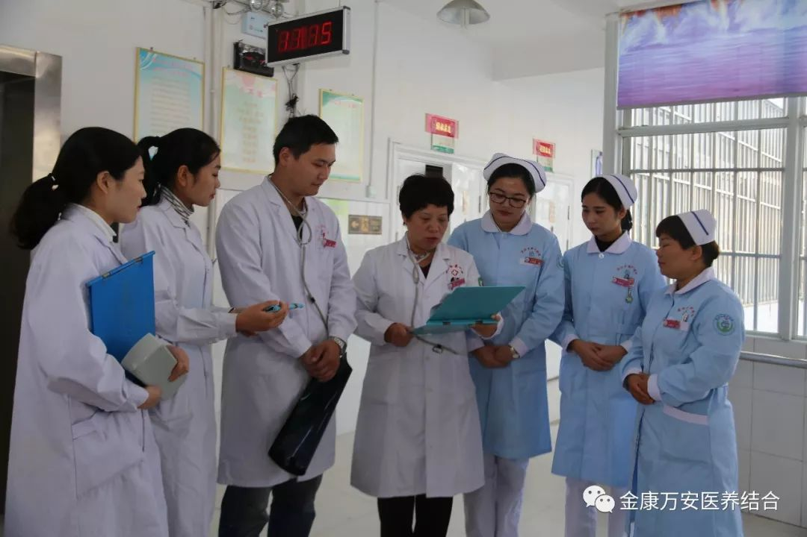
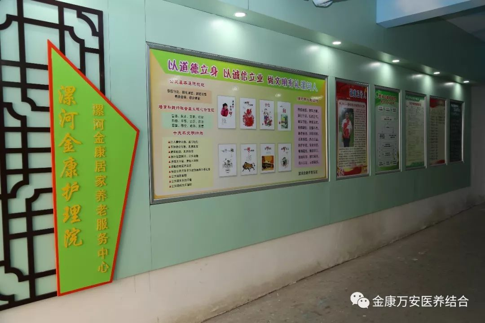
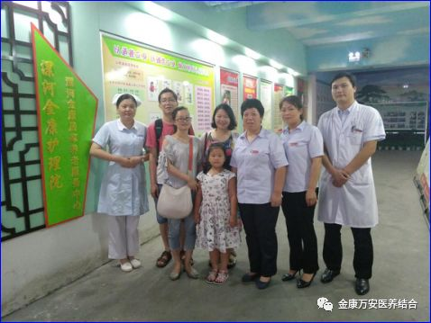

书千里奇缘 扬金康美名
“您好，请问您是金康护理院的张院长吗？”刚刚处理完老人的事情躺床上，一脸疲惫的张莉院长看到是东莞的电话迷茫的应了一声。
“我是江西人，我爸爸在漯河二院的ICU病房，听说你们金康护理院护理老人非常用心周到，老父亲病情已经稳定，想接到你们那里照护。”电话那边急切的言道：“只是不知道你们是否收病情这么重的老人，该怎么走这个程序？”......
杜老是我们这里刚刚入住的一位危重老人，三个月前看上去还非常健康。
一次出差，在高铁上突发脑出血，被送往漯河二院，经救治后，虽然脱离生命危险，但一直处于昏迷状态，从此却卧床不起。儿女们为此非常悬心，因为都远在千里之外，亲情工作两地奔波，时间一长，就觉得难以两头兼顾，显得都非常焦虑。

这一天，我们护理院的一位老人因突发疾病住进漯河二院的ICU病房，当时，老人的子女都在外地打工，主管金康全面工作的张莉院长非常关心的老人的病情，专门派护理员前去照料，并与养老部楚艳敏主任一起把老人送到二院，替老人交了押金，办理住院手续。到医院后，在ICU病房门前焦急的等待老人病情消息，并一再交代护理员，在护理过程中该怎么做、注意事项等，张院长、楚主任的关切之情被几位“旁观者”看在眼里，记在心里，其中一位便是在东莞上班的江西女士，杜老的女儿。
张院长走后，杜老的女儿跟老人家属开始聊起了金康，老人家属感激之情溢于言表，听到家属对金康真诚的盛赞，杜女士突然像找到了救星，当即问到张院长的电话。
张院长在得知是一位远道来客，也不禁非常激动，当即邀请杜女士及姊妹们前来金康参观，并专门负责讲解，金康的发展跌宕起伏，服务专业周到，管理井井有条，环境处处温馨，加上创文的各类标语，显得既大气又规范。在看过我们其他老人的情况后，家属更加坚定的要把老父亲送到金康，由我们代为照护。并且十分感动，说有这样的护理院实在是太好了，要不然我们几个家庭即使被拖垮，也不敢随意委托的。

张莉院长也顾虑的问道：把老父亲放在这么远的地方放心吗？家属姐妹三人同时说，放心放心，在ICU救治的时候就见过你们了，并且也听这里的医护人员及别的家属谈过你们是漯河最有特色的医养结合护理院，护理老人如何专业，对待老人如何好，有这么好的名声，今天又亲眼看到了环境这么好，物品摆放井井有条，房间没有一点异味，护理员和老人之间犹如父母和子女的关系一样亲，看到在这里住的老人这么幸福，真的很放心。
一份沉甸甸的责任，还有什么比信任更可贵的呢。
为了践行我院的孝慈仁善文化，和王院长经常给我们讲的，沟通要站在对方的立场。杜老入住后需要家属买一个气垫床，由于杜家都是外地人，对漯河的地形不太熟悉，看他们迷茫的样子，张院长就直接揽过此事，并立即给陈青慧主任打电话，陈青慧刚好休假，听说此事后也被家属的信任感动，当即表示老人的需要才是第一位，并在中午时分冒着酷暑将气垫床买回来。

养老部楚艳敏主任得到消息后，本来是要回去照顾瘫痪在床的母亲，为了工作，为了入住老人，为了心中的那份责任，也急忙赶回了金康。
老人安心的入住了，儿女们紧紧的抱着楚主任流露出感激之情的那一刻也永久的印在了我们的脑海。心中是责任、是感动、是说不出的幸福！
一根筷子轻轻被折断，十双筷子牢牢抱成团。正是因为我们有这样可亲可敬的家人，才有了金康的美名远播。在这创文的大潮中，什么才是真正的文明？何为崇文尚德，务本图强？怎样做才是爱国、敬业、诚信、友善？这一件事为我们解释的淋漓尽致。诚信守礼，爱国敬业是每一位公民的基本操守，如果我们都能用行动来兑现、去感化，我相信：创文成功，就在今天！
